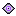

spectator view


Watching the realm
rune border + corner vignette · center stays clear so the world reads
overlay alone
on flat fill — shows the transparent center
Read-only "watching the realm" chrome. The eye_icon joins the 16×16 nav_icons family; the watch_frame says "observing" with a drift-rune border + corner darkening over a transparent center; the watch_plate matches the landing wordmark_plate.
